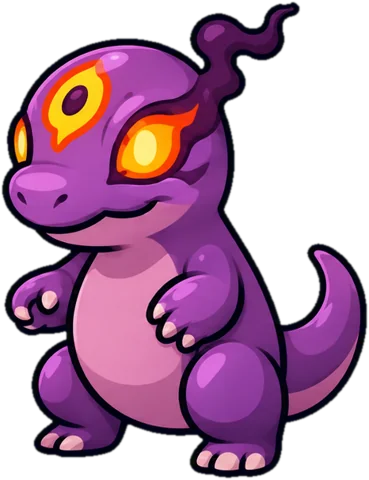

 FireDragon
FireDragonTap a stage to read its story.
Embysaur is a small purple-scaled lizard with a stubby rounded body, large amber eyes, and a tiny wisp of smoke curling from its nostril. It hatches from eggs laid in the Lava Crater's cooler rock-pockets and immediately begins licking the warm mineral residue off the basalt. Its round belly is always full of something, and it tilts its head to one side whenever it hears a name it has never heard, as if filing it somewhere important. The guardians first catalogued it as 'the one that always looks confused but never gets lost.'
Field note: Embysaur always licks the same rock seven times before deciding whether it is edible - seven is its number.
Lava Crater. Embysaur and its family are found in the Lava Crater. See everyone who lives there.
Share a Bond Food that matches its types to become friends. Embysaur loves:
A Bond Food is not a trick. It joins your spirit with the Kimuro's spirit, and only when it chooses you.
Print the Kimuro adventure packs: mazes, cards, a board game and Bond Mark medals.
See the printable packs